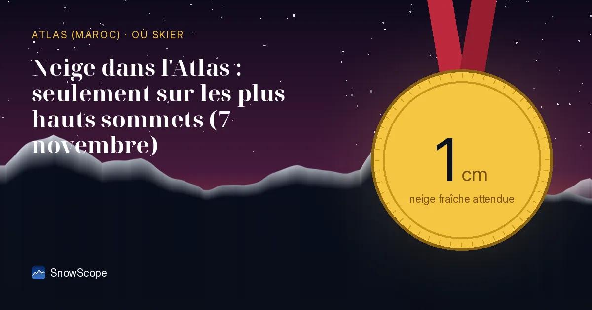

Neige dans l'Atlas : seulement sur les plus hauts sommets (7 novembre)
Le 7 novembre, les trois stations de l'Atlas restent nues : aucune neige n'est présente à Oukaïmeden, Jbel Hebri ou Michlifen. La neige ne persiste que sur la roche nue et les terrains élevés au-dessus des stations, où l'air reste assez froid pour la maintenir.
Consultez les prévisions neige en temps réel pour Oukaïmeden sur l'application SnowScopeHauteurs de neige, alertes poudreuse et carte 3D, gratuitement.
Ce que la carte de neige montre aujourd'hui
L'Atlas contenait 190 km² de couverture neigeuse il y a deux jours, le 5 novembre. Cela a diminué à 110 km² hier, et à seulement 80 km² aujourd'hui. La neige la plus épaisse sur les plus hauts sommets atteint environ 9 cm.
Les trois zones de station sont vides : Oukaïmeden a 0 cm sur ses pentes supérieures, tout comme Jbel Hebri et Michlifen. La neige s'est retirée vers les sommets nus qui se trouvent bien au-dessus du point de départ de toute piste de ski.
| Station | Hauteur de neige | Neige fraîche, 72 h | Attendu, jours suivants | Sommet |
|---|---|---|---|---|
| Oukaïmeden | 0 cm | 0 cm | 1 cm | 3 258 m |
| Jbel Hebri | 0 cm | 0 cm | 0 cm | 2 108 m |
| Michlifen | 0 cm | 0 cm | 0 cm | 2 070 m |

Pourquoi le niveau de gel est important
Le 7 novembre, le niveau de gel à Oukaïmeden varie de 4 180 m à 4 420 m. Le sommet de la station se situe à 3 258 m, bien en dessous de cette ligne. Cela signifie que la pluie ou la neige mouillée tombent sur chaque piste, de la base au sommet.
À Jbel Hebri (sommet 2 108 m) et Michlifen (sommet 2 070 m), le niveau de gel grimpe encore plus haut par rapport au terrain. Les deux stations se trouvent dans une zone où la pluie de novembre est la règle, pas la neige.
Un départ sans neige est-il normal en novembre ?
Oui. En regardant les hivers passés, la profondeur de neige typique à cette date du calendrier à 2 929 m près d'Oukaïmeden était de 0 cm. Sur 46 hivers passés, Oukaïmeden a égalé ou été en dessous des conditions d'aujourd'hui dans 33 d'entre eux. Le début novembre est souvent sec sur la chaîne de l'Atlas.
Les deux stations plus basses, Jbel Hebri et Michlifen, n'ont pas non plus d'historique de neige à cette date : elles se situent en dessous de 2 110 m et conservent rarement un manteau blanc en novembre sauf si une tempête froide arrive.
Ce qui vient ensuite : une semaine de fonte
Jusqu'au 10 novembre, nos prévisions maintiennent le niveau de gel élevé et apportent seulement 1 cm à Oukaïmeden (principalement le 9 novembre). Les 9 cm existants sur les plus hauts sommets continueront à s'amincir alors que l'air reste chaud.
Le 10 novembre, la carte de neige prévoit que l'Atlas baissera à 70 km² : une perte supplémentaire par rapport aux 80 km² d'aujourd'hui. La neige restante sera un mince vernis sur la roche exposée, pas une base stable.
Quelle station surveiller pour le prochain événement
Oukaïmeden se distingue par son altitude suffisante pour capturer la neige quand la prochaine tempête hivernale arrivera. À 3 258 m, son sommet est assez haut pour que l'air froid maintienne les précipitations blanches au lieu de mouillées. Jbel Hebri et Michlifen, tous deux en dessous de 2 110 m, dépendent de conditions beaucoup plus rudes : une tempête assez froide pour abaisser le niveau de gel jusqu'à leur terrain.
Quand les conditions changeront—et elles changeront—Oukaïmeden sera le premier à afficher du blanc sur la carte. Les deux stations plus basses suivront seulement si la chute de température est suffisamment forte.
Préparation à l'avance
La neige en début de saison est mince et fragile. Si vous voyagez dans l'Atlas dans les prochains jours, attendez-vous à ce que les rochers et l'herbe se cachent juste sous les patches blancs. Restez sur les pistes balisées et préparées où elles existent.
Les prévisions quelques jours à l'avance peuvent changer avec de nouvelles données météorologiques. Utilisez l'application SnowScope pour suivre la carte au fur et à mesure de la semaine et pour paramétrer une alerte poudreuse à Oukaïmeden. Vérifiez le site de la station pour confirmer que les remontées fonctionnent avant de faire vos bagages.
Conseils aux skieurs
- La neige en début de saison est mince et instable : même quelques centimètres peuvent cacher des rochers et de la végétation. Restez sur les pistes ouvertes.
- Oukaïmeden est la seule station assez haute pour transformer la neige de novembre en neige blanche. Surveillez attentivement ses prévisions quand les tempêtes approchent.
- Le niveau de gel est bien au-dessus des trois stations cette semaine : la pluie tombera sur chaque piste. Les conditions ne s'amélioreront que quand un système beaucoup plus froid arrive.
- Les prévisions changent day après jour. Consultez la carte SnowScope à nouveau avant de voyager.
- Avant de skier hors-piste, consultez le dernier bulletin officiel d'avalanche et vérifiez le statut d'ouverture de la station sur son site internet.
À propos de ces chiffres
Les hauteurs de neige des stations sont la neige la plus épaisse sur le haut du domaine à la date indiquée ; ce sont des estimations pour une zone, pas une mesure en un point. Les prévisions peuvent changer. Consultez toujours le bulletin d'avalanche officiel avant le hors-piste.
Citer ce bulletin
Pour la recherche, l'enseignement ou la presse : chiffres et graphiques réutilisables librement sous CC BY 4.0 avec cette citation.
SnowScope (2026), Neige dans l'Atlas : seulement sur les plus hauts sommets (7 novembre), https://snowscope.app/blog/fr/2026/11/atlas-morocco-atlas-snow-check-7-november-2026.html, consulté le 2026-11-07
SnowScope (Atlas Labs). (2026, November 7). Neige dans l'Atlas : seulement sur les plus hauts sommets (7 novembre). SnowScope snow reports. https://snowscope.app/blog/fr/2026/11/atlas-morocco-atlas-snow-check-7-november-2026.html
BibTeX
@misc{snowscope2026atlasmoroccoatlassnowche,
author = {{SnowScope (Atlas Labs)}},
title = {Neige dans l'Atlas : seulement sur les plus hauts sommets (7 novembre)},
year = {2026},
month = nov,
howpublished = {\url{https://snowscope.app/blog/fr/2026/11/atlas-morocco-atlas-snow-check-7-november-2026.html}},
note = {Published 2026-11-07 13:36 UTC; accessed 2026-11-07}
}· CC BY 4.0 · Méthodes, données et outils →
Oukaïmeden : neige et température selon l'altitude, cet hiver vs l'hiver dernier (outils) →
Suivre Oukaïmeden
Gratuit : un message quand la neige arrive, et la météo chaque matin.
Autres bulletins neige

Un carnet pratique sur Oukaïmeden, dans le Haut Atlas : quand la neige arrive, en quelle quantité, quelles pentes viser et comment y aller depuis Marrakech.

Le 15 décembre, Oukaïmeden mi-montagne affiche 16 cm contre 89 cm à Val Thorens. Nous avons vérifié les tarifs des remontées. Données du 13 novembre 2026.

Le 15 décembre à Michlifen, 89 % des hivers sont presque sans neige. Les meilleures chances arrivent après une tempête, pas selon le calendrier. Données du 13 novembre 2026.